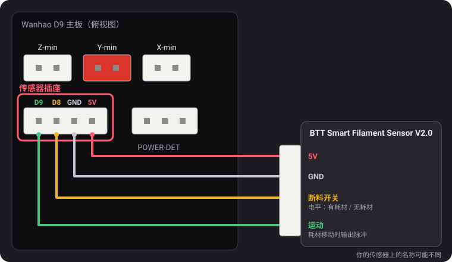
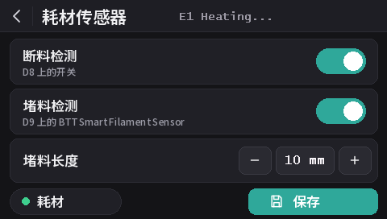

耗材传感器
从 v2.0.5 起，这些固件支持两种传感器：Wanhao 的断料开关，以及 BTT Smart Filament Sensor V2.0，后者还能发现耗材停止移动（料盘缠绕、堵料、耗材被挤出齿轮啃坏）。所有型号默认开启断料检测，堵料检测默认关闭。
传感器插座

POWER-DET 左侧、限位开关插座下方的 4 针插座，依次为 D9、D8、GND 和 5V。针脚名称来自 dustovich 找到并分享在 Discord 上的一份 Wanhao 接线图；主板背面把这四个针脚分别标为 CTRL、BTN、GND 和 VCC。
- D8 是 Wanhao 原厂固件读取的断料输入。
- D9 在 Wanhao 固件中未使用：这些固件在这里读取 BTT 传感器的运动信号。
在屏幕上设置
屏幕刷入 DGUS Reloaded 2.0 后（主板固件 v2.0.9 或更高版本）：设置 → 耗材 → 耗材传感器。
- 断料检测开启或关闭全部检测，相当于
M412 S1/M412 S0。 - 堵料检测按下方设置的长度开启堵料检测，或将其关闭（
L0）。 - 堵料长度：− 和 + 每次调整 1 mm；点击数字可直接输入。
- 断料开关检测到耗材时，耗材指示点为绿色，检测不到时为红色。
- 更改会立即生效。保存会保存这些更改，相当于
M500。点返回箭头则不保存直接离开：下次开机时会恢复已保存的设置。

M412 命令
所有设置都可以通过 USB 在串口终端中完成（Pronterface、切片软件或 OctoPrint 自带的终端，250000 波特率）。多个参数可以合并在一条命令中，例如 M412 S1 L10。
| 命令 | 作用 |
|---|---|
M412 | 显示当前状态，例如 Filament runout ON ; Distance 5.00mm ; Motion distance 0.00mm。 |
M412 S1 | 开启检测：开启断料开关；如果堵料长度不为 0，也同时开启堵料检测。 |
M412 S0 | 关闭全部检测，包括断料开关和堵料检测。 |
M412 D5 | 断料开关检测不到耗材后，继续打印 5 mm 再暂停，以用完传感器和喷嘴之间剩余的耗材。默认 5 mm。 |
M412 L10 | 开启堵料检测（仅限 BTT 传感器）：当 10 mm 耗材经过挤出机而传感器的滚轮没有转动时暂停。 |
M412 L0 | 关闭堵料检测，断料开关保持不变。这是默认设置。 |
M500 | 保存设置。不保存的话，关机后更改就会丢失。 |
M119 | 装有耗材时 filament 一行显示 TRIGGERED，没有耗材时显示 open。 |
M412 L0 以及单独使用 L 的功能，来自我们对 Marlin 的修改（MarlinFirmware/Marlin#28585），已集成到这些固件中。在没有这项修改的 Marlin 中，单独的 L
会被忽略，而 L0 会立即判定为堵料并暂停打印。
Wanhao 断料开关
它告诉固件耗材是否存在。耗材用完时，再走 5 mm 耗材后打印暂停，屏幕开始换料流程。
从 v2.0.8 起，所有型号默认开启。D8 上什么都没接时，主板的上拉电阻会把该针脚保持在 5 V，读作“有耗材”：检测永远不会触发，所以无论是否安装了传感器，都可以保持开启。把断料开关接到 D8 上，就能直接工作。
- 堵料检测保持关闭（
L0）：这种开关无法看出耗材是否在移动。 - 关闭开关：
M412 S0然后M500。 - 由早期版本保存的设置会保留其开/关状态。要开启：
M412 S1然后M500，或恢复默认值（M502然后M500，这也会清除你的探针 Z 偏移和网格）。
BTT Smart Filament Sensor V2.0
这款传感器有两个输出，固件以不同方式读取它们：
- 断料开关（接 D8）是电平信号：有耗材时为 5 V，耗材用完后为 0 V。
- 运动输出（接 D9）来自一个由经过的耗材带动旋转的小滚轮。耗材每前进几毫米，输出就在 0 V 和 5 V 之间翻转一次。固件只关注这些变化：如果挤出机推送了堵料长度的耗材，却一次变化都没有，说明耗材没有跟着走（料盘缠绕、堵料、耗材被啃坏），打印就会暂停。断料开关无法发现这种情况：堵料时耗材仍然在。
接线
5V 接 5V，GND 接 GND，断料开关信号接 D8，运动信号接 D9。传感器线缆上印的名称可能不同。
开启
M412 S1 L10
M500如果打印无故暂停，请加大堵料长度：M412 L15 然后 M500。如果只想保留断料开关：M412 L0 然后 M500。
检查
M412：Filament runout ON ; Distance 5.00mm ; Motion distance 10.00mm。- 装有耗材时
M119：filament: TRIGGERED。如果这一行是在你用手推动耗材时变化，而不是在插入或取出耗材时变化，说明两根信号线接反了：对调 D8 和 D9。
L0 则从不触发），但尚未用 BTT 传感器本身测试。如果开关读数反了（装有耗材时显示 open），请在 Discord 上告诉我们。从 v2.0.5 或 v2.0.6 更新
这两个版本无法关闭堵料检测，因此使用了一个长到永远达不到的堵料长度：v2.0.5 中为 100 m
（实际上太短了：约为 1 kg 料盘的三分之一，超过之后，一直开着的打印机可能会无故暂停），v2.0.6 中为 10 km。打印机启动时，v2.0.7 会把这两个值载入为 L0。你为 BTT 传感器设置的实际长度（如 L10）会被保留。从 v2.0.4 或更早版本更新时，会载入 5 mm 的断料距离，而不是这些版本保存的 0。